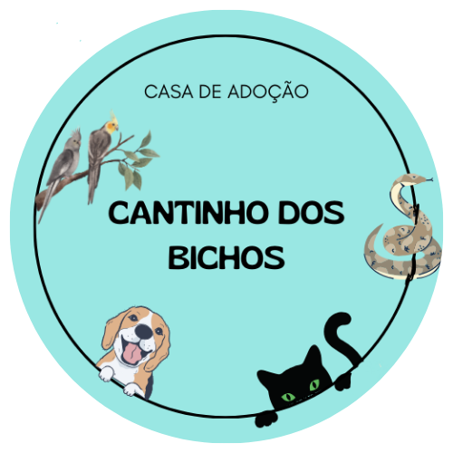

Cantinho dos Bichos
Torne uma vida mais feliz:
Adote um amigo!
Você já considerou a alegria que um animal de estimação pode trazer à sua vida?
Eles não são apenas companheiros leais, mas também fontes inesgotáveis de amor, risos e ternura
Quem somos?
Somos a Cantinho dos Bichos. Um cantinho que oferecemos para nossos melhores amigos.
Nossa missão é resgatar, reabilitar e encontrar lares amorosos para animais abandonados e maltratados.
Estamos comprometidos em melhorar a vida de animais em situações de risco
E promovendo a conscientização sobre a importância da adoção responsável e do bem-estar dos nossos melhores amigos.
Nossa história
A ONG foi fundada em 2023 por um grupo de apaixonados por animais que começou com um pequeno abrigo improvisado em um quintal.
Com o tempo, nossa dedicação e compromisso cresceram, e agora somos uma organização de resgate e adoção de animais estabelecida.
Hoje contamos com uma grande equipe dedicada de voluntários e veterinários.
Todos prontos para ajudar com o que for nossos melhores amigos!
Instituições Parceiras
Trabalhamos em estreita colaboração com clínicas veterinárias locais
Também temos parceria com organizações de resgate de animais em abandono
Além de termos nossos parceiros voluntários que lutam pela nossa causa.
Seja uma Instituição Parceira
E venha fazer parte da nossa causa!
Consulte os contatos ao final da página.


Animais
Para Adoção
Adote um melhor amigo hoje mesmo!
Rua XV de Novembro, 7740 - XXXXX-XXX - Guarapuava, PR
Telefone: (42) XXXXX-XXXX
E-mail: adocao@cantinho.com.br
Cantinho dos Bichos - Casa de Adoção - CNPJ XX.XXX.XXX/XXXX-XX